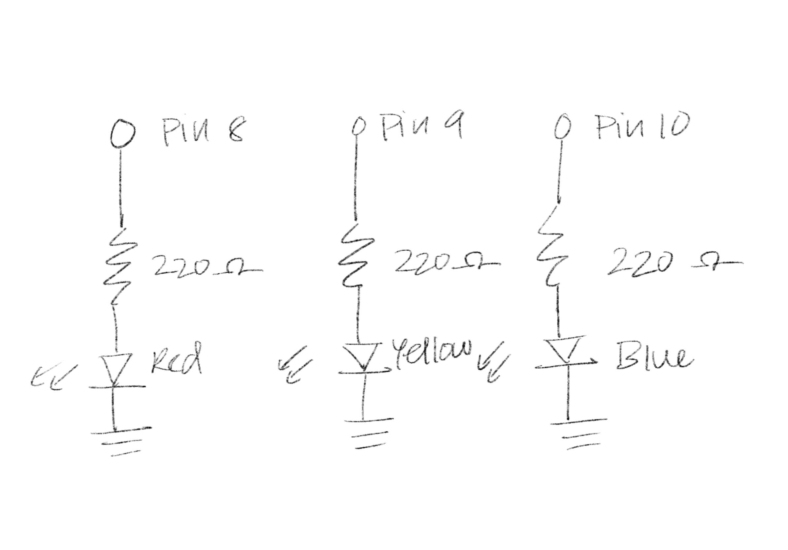

Mileena Ros's Assignment 1!

My circuit, using a red, yellow, and blue LED.
Here is all of my documentation for Assignment 1!
Here is all of my code:
int timer = 100; // timing of music piece void setup() { // put your setup code here, to run once: pinMode(8, OUTPUT); // sets the digital pin 8 as an output (Red LED) pinMode(9, OUTPUT); // sets the digital pin 9 as an output (Yellow LED) pinMode(10, OUTPUT); // sets the digital pin 10 as an output (Blue LED) } void loop() { // put your main code here, to run repeatedly: // representation of the musical notes of twinkle twinkle little star // red = A // yellow = E // blue = F# // red & yellow = D // yellow & blue = C# // red & blue = B line1(); // calls line 1 method line2(); // calls line 2 method line3(); // calls line 3 method line3(); line1(); line2(); } // the notes for "twinkle twinkle little star" void line1() { for (int thisPin = 8; thisPin <= 10; thisPin++) { // loop from lowest pin (8) to highest (10) for (int repeat = 1; repeat <= 2; repeat++) { // flash each led twice digitalWrite(thisPin, HIGH); // turn on LED delay(timer * 3); // pause the program to keep LED on digitalWrite(thisPin, LOW); // turn off LED by making voltage low delay(timer); // pause the program to keep LED off } } digitalWrite(9, HIGH); // flashes the yellow LEDs as a half note delay(timer * 6); digitalWrite(9, LOW); delay(timer); } // the notes for "how I wonder what you are" void line2() { for (int repeat = 1; repeat <= 2; repeat++) { // this loops flashes the red and yellow LEDs twice as digitalWrite(8, HIGH); // quarter notes digitalWrite(9, HIGH); delay(timer * 3); digitalWrite(8, LOW); digitalWrite(9, LOW); delay(timer); } for (int repeat = 1; repeat <= 2; repeat++) { // this loops flashes the yellow and blue LEDs twice as digitalWrite(9, HIGH); // quarter notes digitalWrite(10, HIGH); delay(timer * 3); digitalWrite(9, LOW); digitalWrite(10, LOW); delay(timer); } for (int repeat = 1; repeat <= 2; repeat++) { // this loops flashes the red and blue LEDs twice as digitalWrite(8, HIGH); // quarter notes digitalWrite(10, HIGH); delay(timer * 3); digitalWrite(8, LOW); digitalWrite(10, LOW); delay(timer); } digitalWrite(8, HIGH); // flashes the red LEDs as a half note delay(timer * 6); digitalWrite(8, LOW); delay(timer); } // the notes for "up above the world so high/like a diamond in the sky" void line3() { for (int repeat = 1; repeat <= 2; repeat++) { // this loops flashes the yellow LEDs twice as quarter notes digitalWrite(9, HIGH); delay(timer * 3); digitalWrite(9, LOW); delay(timer); } for (int repeat = 1; repeat <= 2; repeat++) { // this loops flashes the red and yellow LEDs twice as digitalWrite(8, HIGH); // quarter notes digitalWrite(9, HIGH); delay(timer * 3); digitalWrite(8, LOW); digitalWrite(9, LOW); delay(timer); } for (int repeat = 1; repeat <= 2; repeat++) { // this loops flashes the yellow and blue LEDs twice as digitalWrite(9, HIGH); // quarter notes digitalWrite(10, HIGH); delay(timer * 3); digitalWrite(9, LOW); digitalWrite(10, LOW); delay(timer); } digitalWrite(8, HIGH); // this loops flashes the red and blue LEDs as a half note digitalWrite(10, HIGH); delay(timer * 6); digitalWrite(8, LOW); digitalWrite(10, LOW); delay(timer); } // References: Example sketch Blink and Arduino reference documentation

My schematic.